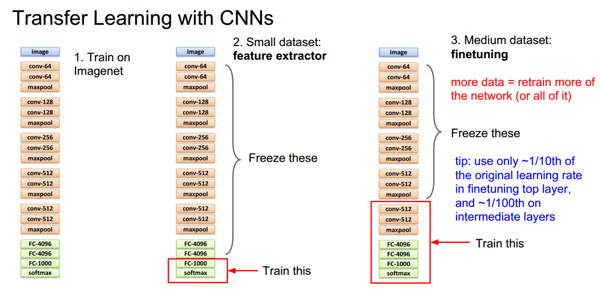
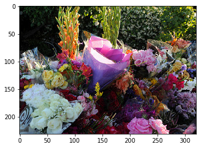
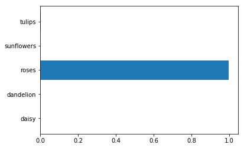

cnn迁移学习详解与实践技巧
2016-12-23
前言
迁移学习是指我们从网络上下载训练好的模型也就是weight，然后部分的嵌入我们的网络，作为初始化weight或者在此基础上用我们自己的数据集进行微调。
因为训练神经网络花费时间巨大有时甚至要数周， 因此在实际开发中，我们很少从头开始去训练网络，而在网络上已经有很多为不同任务使用大型数据集训练了数周的模型，这些模型均已经稳定收敛，达到了很高的精度。
因此除非你的需求非常独特，否则大部分情况下你都可以使用迁移学习,在这些模型的基础上用自己的数据集进行训练，或者把这些模型部分的嵌入自己的网络，比如在分割或检测任务中，如果是用滑动窗口方法，那对于该窗口而言，仍然是一个分类任务，可以迁移你想要的分类模型，当然现在的分割和检测已经不直接使用滑动窗口，但是只要你网络中的部分任务是前人做过，你都可以使用迁移学习的方法把weight嵌入你的网络作为初始化或者微调。
1. 微调技巧
在开发中针对不同的情况，对模型的微调要采用不同的方法,否则反而会得出较差的结果或者要花费更长的时间训练.大概情况有这么几种:
| 数据集很相似 | 数据集不相似 | |
|---|---|---|
| 数据很少(10000左右) | 只训练分类层 | 尝试从不同层训练分类 |
| 数据不算少也不多 | 微调最后几层 | 微调最后多层 |
| 大量数据，几百万 | 把模型参数当初始化训练 | 把模型参数当初始化训练 |
如上表所示，对于我们能拥有的数据集大小和任务相似性，要分不同情况处理：

1. similar and small dataset
数据集很相似数据很少，比如我们下载的是在ImageNet上训练好的inceptionV4 1000分类模型，而我们想做的是对20种猫进行分类，我们可以直接使用该模型不包含分类层的所有权重，并在此基础上训练20种分类，如上图2.SmallDataSet所示.
有一点要注意的是，对于冻结层的处理，有两种方法:
a. 每次训练让image从头输入网络，但是不训练冻结层的权重.
b.让image输入网络，直到冻结层结束，也就是图片最后一层FC-4096,输出feature这里是4096维的feature，存储在本地。然后训练的时候把feature当作输入,后面接我们的分类层。这样做可以大大提高训练速度，所以一般采用该方法，后面的代码演示也是使用该方法。
2. similar and many dataset
数据集很相似数据不算少也不多,这里的不多是指相对于我们下载的模型的训练集而言，比如我们拥有数十万的训练集，此时可以对网络最后几层进行训练，具体几层取决于我们拥有的数据集。
也有一点要注意的是，进行微调的时候最好把最后层的学习率设为此模型正常训练时学习率的1/10，中间微调层的学习率设为1/100，或者先微调最后分类层，等模型收敛后，在把最后几层加入微调.
3. similar and a lot of dataset
数据集很相似同时拥有大量数据，此时可以直接把模型参数当做权重初始化对所有参数进行训练，当然也要注意学习率要设为之前的1/10或1/100或更低.
4. diffrenet dataset
对数据集不相似的情况，在数据很少时训练效果不会特别好，但是依然可以按照表中的方法进行微调尝试.
5.代码
最后贴一个image直接输入网络，但只对模型部分参数进行训练的代码：
optimizer = tf.train.AdagradOptimzer(0.01)
#获取你需要训练的域下的变量
first_train_vars = tf.get_collection(tf.GraphKeys.TRAINABLE_VARIABLES,
"scope/prefix/for/first/vars")
#最小化cost，只训练first_train_vars
first_train_op = optimizer.minimize(cost, var_list=first_train_vars)
second_train_vars = tf.get_collection(tf.GraphKeys.TRAINABLE_VARIABLES,
"scope/prefix/for/second/vars")
second_train_op = optimizer.minimize(cost, var_list=second_train_vars)
2.迁移学习代码实现
演示使用VGG16分类模型，你也可以下载inceptionV3 V4模型取得更好的结果，流程都是一样的
1.下载VGG16数据
from urllib.request import urlretrieve
from os.path import isfile,isdir
from tqdm import tqdm
#设置本地存储目录
vgg_dir = 'tensorflow_vgg/'
if not isdir(vgg_dir):
raise Exception("VGG directory doesn't exist!")
#使用tqdm显示下载进度
class DLProgress(tqdm):
last_block = 0
def hook(self,block_num =1,block_size=1,total_size=None):
self.total = total_size
self.update((block_num - self.last_block) * block_size)
self.last_block = block_num
#如果文件不存在就下载，如果存在就跳过
if not isfile(vgg_dir + "vgg16.npy"):
#使用urlretrieve下载模型数据,vgg全部参数大概500多M,所以也可以手动下载，然后放到tensorflow_vgg文件夹里
with DLProgress(unit='B', unit_scale=True, miniters=1, desc='VGG16 Parameters') as pbar:
urlretrieve('https://s3.amazonaws.com/content.udacity-data.com/nd101/vgg16.npy',vgg_dir + 'vgg16.npy',pbar.hook)
else :
print("Parameter file already exists!")
2. 下载flower数据
演示使用google的flower数据，与上面下载逻辑基本一致
#tarfile解压缩
import tarfile
dataset_folder_path = 'flower_photos'
class DLProgress(tqdm):
last_block = 0
def hook(self, block_num=1, block_size=1, total_size=None):
self.total = total_size
self.update((block_num - self.last_block) * block_size)
self.last_block = block_num
if not isfile('flower_photos.tar.gz'):
with DLProgress(unit='B', unit_scale=True, miniters=1, desc='Flowers Dataset') as pbar:
urlretrieve(
'http://download.tensorflow.org/example_images/flower_photos.tgz',
'flower_photos.tar.gz',
pbar.hook)
#解压缩
if not isdir(dataset_folder_path):
with tarfile.open('flower_photos.tar.gz') as tar:
tar.extractall()
tar.close()
3. 图片通过冻结层，输出feature
a. 导如需要包
import os
import numpy as np
import tensorflow as tf
from tensorflow_vgg import vgg16
from tensorflow_vgg import utils
b. 获取图片分类
#获取图片路径
data_dir = 'flower_photos/'
#获取图片分类
contents = os.listdir(data_dir)
print('contents contain {}'.format(contents))
#再次获取图片分类，去掉不是文件夹的路径
classes = [each for each in contents if isdir(data_dir+each)]
print('classes = {}'.format(classes))
#classes = ['daisy', 'dandelion', 'roses', 'sunflowers', 'tulips']
c. 处理图片,获取分类层之前的feature
batch_size = 10
codes_list = []
labels = []
batch = []
codes = None
#重置计算图,防止重复加载
tf.reset_default_graph()
with tf.Session() as sess:
feed_images = tf.placeholder(dtype=tf.float32,shape=[None,224,224,3],name='feed_image')
#加载vgg16模型,bulid运算图
vgg = vgg16.Vgg16()
with tf.name_scope('content_vgg'):
vgg.build(feed_images)
#递归分类
for each in classes :
print("Starting {} images".format(each))
class_path = data_dir + each
files = os.listdir(class_path)
#递归一个分类中的所有图片
for ii ,file in enumerate(files,1):
#加载图片，中心裁剪，并shape成224x224x3
img = utils.load_image(os.path.join(class_path,file))
#把图片和对应分类组成列表
batch.append(img.reshape((1, 224, 224, 3)))
labels.append(each)
if ii % batch_size == 0 or ii == len(files):
images = np.concatenate(batch)
#输入是images，输出是运行到relu6层的结果
codes_batch = sess.run(vgg.relu6,feed_dict={feed_images:images})
#把结果拼接为codes
if codes is None :
codes = codes_batch
else:
codes = np.concatenate((codes,codes_batch))
#重置batch
batch = []
print('{} images processed'.format(ii))
d. 保存features
# write codes to file
with open('codes','w') as f:
codes.tofile(f)
# write labels to file
import csv
with open('labels','w') as f:
writer = csv.writer(f,delimiter='\n')
writer.writerow(labels)
运行结果是：codes是一个[3670,4096]数组,3670表示图片数量，4096是特征维度，labels是[3670,5],5表示总共分5类
4 建立分类器进行训练
a.加载codes和lables，上面图片只处理一次，以后都直接从硬盘加载
# read codes and labels from file
import csv
with open('labels') as f:
reader = csv.reader(f,delimiter='\n')
labels = np.array([each for each in reader if len(each) > 0]).squeeze()
with open('codes') as f:
codes = np.fromfile(f,dtype=np.float32)
codes = codes.reshape((len(labels),-1))
b.对lables进行onehot编码：
#use LabelBinarizer to create one-hot encoded vectors from the labels.
from sklearn.preprocessing import LabelBinarizer
lb = LabelBinarizer()
lb.fit(labels)
labels_vecs = lb.transform(labels) c.随机打乱数据集次序，并分成train val test集合:
#shuffle our data so the validation and test sets contain data from all classes
from sklearn.model_selection import StratifiedShuffleSplit
ss = StratifiedShuffleSplit(n_splits=1,test_size=0.2)
train_idx, val_idx = next(ss.split(codes,labels))
half_val_len = int(len(val_idx)/2)
val_idx ,test_idx = val_idx[:half_val_len],val_idx[half_val_len:]
train_x, train_y = codes[train_idx],labels_vecs[train_idx]
val_x, val_y = codes[val_idx],labels_vecs[val_idx]
test_x, test_y = codes[test_idx],labels_vecs[test_idx]
#Train shapes (x, y): (2936, 4096) (2936, 5)
#Validation shapes (x, y): (367, 4096) (367, 5)
#Test shapes (x, y): (367, 4096) (367, 5)
d.构建分类层，logits，损失函数，预测准确率:
#build the classifier layers
#placeholder input and labels
inputs_ = tf.placeholder(dtype=tf.float32,shape=[None, codes.shape[1]],name='inputs_place')
labels_ = tf.placeholder(dtype=tf.float32,shape=[None,labels_vecs.shape[1]],name='lables_place')
# fully_connected and cost
fc = tf.contrib.layers.fully_connected(inputs_,256)
logits = tf.contrib.layers.fully_connected(fc,num_outputs=labels_vecs.shape[1],activation_fn=None)
cross_entropy = tf.nn.softmax_cross_entropy_with_logits(labels=labels_,logits=logits)
cost = tf.reduce_mean(cross_entropy)
#adam optimizer to minimize cost
optimizer = tf.train.AdamOptimizer().minimize(cost)
#预测准确率
predicted = tf.nn.softmax(logits)
correct_pred = tf.equal(tf.arg_max(predicted,1),tf.arg_max(labels_,1))
accuracy = tf.reduce_mean(tf.cast(correct_pred,tf.float32))
e.把训练集分成批量进行训练:
#get batch
def get_batches(x, y, n_batches=10):
batch_size = len(x) // n_batches
for ii in range(0,n_batches * batch_size ,batch_size):
if ii != (n_batches-1) * batch_size:
X,Y = x[ii: ii+batch_size],y[ii: ii+batch_size]
else :
X,Y = x[ii:],y[ii:]
yield X,Y f.训练并保存模型:
epochs = 10
iteration = 0
saver = tf.train.Saver()
with tf.Session() as sess:
sess.run(tf.global_variables_initializer())
for e in range(epochs):
for x ,y in get_batches(train_x,train_y) :
loss, _ = sess.run([cost,optimizer],feed_dict={inputs_:x,labels_ : y})
print("Epoch: {}/{}".format(e+1, epochs),
"Iteration: {}".format(iteration),
"Training loss: {:.5f}".format(loss))
iteration += 1
if iteration % 5 ==0:
feed = {inputs_: val_x,labels_: val_y}
val_acc = sess.run(accuracy,feed_dict=feed)
print("Epoch: {}/{}".format(e, epochs),
"Iteration: {}".format(iteration),
"Validation Acc: {:.4f}".format(val_acc))
saver.save(sess,"checkpoints/flowers.ckpt")
结果：
Epoch: 9/10 Iteration: 85 Training loss: 0.01775
Epoch: 9/10 Iteration: 86 Training loss: 0.03539
Epoch: 9/10 Iteration: 87 Training loss: 0.02733
Epoch: 9/10 Iteration: 88 Training loss: 0.01915
Epoch: 9/10 Iteration: 89 Training loss: 0.02459
Epoch: 8/10 Iteration: 90 Validation Acc: 0.8610
Epoch: 10/10 Iteration: 90 Training loss: 0.01595
Epoch: 10/10 Iteration: 91 Training loss: 0.02532
Epoch: 10/10 Iteration: 92 Training loss: 0.01329
Epoch: 10/10 Iteration: 93 Training loss: 0.02923
Epoch: 10/10 Iteration: 94 Training loss: 0.02558
Epoch: 9/10 Iteration: 95 Validation Acc: 0.8638
Epoch: 10/10 Iteration: 95 Training loss: 0.01392
Epoch: 10/10 Iteration: 96 Training loss: 0.02822
Epoch: 10/10 Iteration: 97 Training loss: 0.02173
Epoch: 10/10 Iteration: 98 Training loss: 0.01468
Epoch: 10/10 Iteration: 99 Training loss: 0.01980
Epoch: 9/10 Iteration: 100 Validation Acc: 0.8610
这是只训练了10次的结果，loss并没有降到很低，如果继续训练，并使用数据增强，应该能取得更好效果，从这里可以看出使用迁移学习可以很轻松的获得一个相应的高准确率的结果,这种方法还是强大的.
5. 测试
a.使用测试集测试:
#Testing
with tf.Session() as sess:
saver.restore(sess,tf.train.latest_checkpoint('checkpoints'))
feed = {inputs_: test_x,
labels_: test_y}
test_acc = sess.run(accuracy, feed_dict=feed)
print("Test accuracy: {:.4f}".format(test_acc))
运行结果:
Test accuracy: 0.8719
b.使用训练的新模型，对一朵花进行实际预测:
%matplotlib inline
import matplotlib.pyplot as plt
from scipy.ndimage import imread
test_img_path = 'flower_photos/roses/10894627425_ec76bbc757_n.jpg'
test_img = imread(test_img_path)
plt.imshow(test_img)
# Run this cell if you don't have a vgg graph built
with tf.Session() as sess:
input_ = tf.placeholder(tf.float32, [None, 224, 224, 3])
vgg = vgg16.Vgg16()
vgg.build(input_)
with tf.Session() as sess:
img = utils.load_image(test_img_path)
img = img.reshape((1, 224, 224, 3))
feed_dict = {input_: img}
code = sess.run(vgg.relu6, feed_dict=feed_dict)
saver = tf.train.Saver()
with tf.Session() as sess:
saver.restore(sess, tf.train.latest_checkpoint('checkpoints'))
feed = {inputs_: code}
prediction = sess.run(predicted, feed_dict=feed).squeeze()
plt.imshow(test_img)
plt.barh(np.arange(5), prediction)
_ = plt.yticks(np.arange(5), lb.classes_)
运行结果：   很棒！我们成功的预测了图片里花为玫瑰.
3. 总结
使用迁移学习可以很容易的得出我们想要的模型，但是里面的坑还是很多的，最重要的还是要记住，微调时学习率一定要比正常的小，因为你是在一个已经收敛的模型上进行训练的.